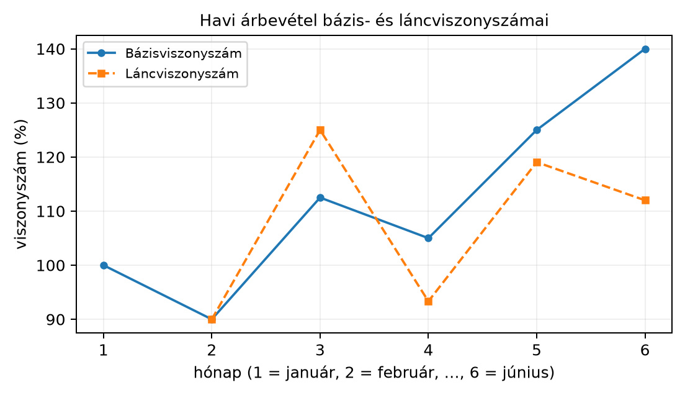
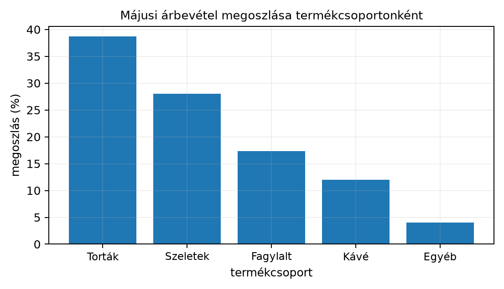

A viszonyszámok a cukrászüzemben is akkor válnak fontossá, amikor a puszta forintösszegekből szeretnénk megtudni, mi változott, mennyivel és mihez képest. Egy hónap árbevétele önmagában még nem mondja meg, hogy az eredmény jó vagy rossz. Ha a múlt havi, a tavalyi azonos havi vagy a tervhez képest nézzük, akkor kapunk döntésre alkalmas képet.
Képzeljünk el egy kisebb cukrászdát. A havi nettó árbevétel (ezer forintban) így alakult:
| Hónap | Árbevétel (ezer Ft) |
|---|---|
| Január | 1 200 |
| Február | 1 080 |
| Március | 1 350 |
| Április | 1 260 |
| Május | 1 500 |
| Június | 1 680 |
A tulajdonos azt kérdezi: a júniusi forgalom mennyivel haladta meg a januárit, és mennyivel az előző havit? Az első kérdésre a bázisviszonyszám, a másodikra a láncviszonyszám ad választ. A termékválaszték vizsgálatakor pedig azt kérdezzük: a havi bevétel hány százalékát adták a torták, a fagylaltok vagy a kávé? Erre a megoszlási viszonyszám szolgál.
Definíció. A viszonyszám két, egymással tartalmilag összehasonlítható adat hányadosa. Az eredményt gyakran százalékos formában adjuk meg. A viszonyszám mindig megmutatja a viszonyítás irányát: mihez képest számolunk.
Definíció. A bázisviszonyszám egy rögzített bázisidőszakhoz viszonyítja az egyes időszakok adatát. A bázisidőszak értékét tekintjük -nak. A bázisviszonyszám megmutatja, hogy az adott időszak értéke hány százaléka a bázisidőszak értékének.
Definíció. A láncviszonyszám mindig az előző időszakhoz viszonyít. Az előző időszak értékét tekintjük -nak. A láncviszonyszám ezért a két egymást követő időszak közötti változást fejezi ki.
Összefüggés. A bázisviszonyszám képlete:
ahol a vizsgált időszak értéke, a bázisidőszak értéke, és az -edik időszak bázisviszonyszáma. A láncviszonyszám képlete:
ahol az előző időszak értéke .
Szabály. A viszonyszámításnál mindig közölni kell a viszonyítás alapját. Helytelen például azt mondani, hogy „a forgalom 120%”, mert nem tudjuk, mihez képest 120. Helyes megfogalmazás: „a forgalom a tavalyi azonos hónaphoz képest 120%, az előző hónaphoz képest 105%”.
Szabály. A bázisviszonyszámok átszámíthatók láncviszonyszámmá, ha képezzük a szomszédos bázisviszonyszámok hányadosát:
Fordítva, a láncviszonyszámokból bázisviszonyszámot kapunk, ha összeszorozzuk a láncviszonyszámokat a kezdő időszaktól a vizsgált időszakig. A láncviszonyszámokat először tizedestörtté alakítjuk (100-zal osztjuk), majd a szorzatot újra 100-zal szorozzuk:
Definíció. A megoszlási viszonyszám azt mutatja meg, hogy egy részadat hány százalékát teszi ki a teljes adathalmaznak. Képlete:
A megoszlási viszonyszámok összege – ha minden részt figyelembe vettünk – .
A viszonyszámok százalékszámítással készülnek, ezért az Mennyiségi egységek, átváltások, százalékszámítás és kerekítés alfejezetben tanult képleteket használjuk. A viszonyszámítás sajátossága, hogy mindig a viszonyítási alap a nevező. A bázisviszonyszámnál a bázisidőszak, a láncviszonyszámnál az előző időszak, a megoszlási viszonyszámnál az összes adat.
A százalékos viszonyszámokat általában egy vagy legfeljebb két tizedesjegyre kerekítjük. Ha a megoszlási viszonyszámokat kerekítjük, a kerekítések miatt az összeg nem mindig pontosan , hanem lehet például vagy . Ezt a táblázat alatt megjegyzésben jelezzük. Fontos, hogy a kerekítést csak a számolás végén végezzük el, ne a közbülső lépésekben.
Példa. Egy termékcsoport a havi 1 500 ezer Ft árbevételből 580 ezer Ft-ot ad. A megoszlási viszonyszám:
Ha a többi csoportot is kerekítjük, az összeget ellenőrizni kell.
Számítás. A szemléletes képben megadott forgalmi adatokat használjuk, a bázisidőszak a január.
Adott: a hat havi árbevétel. Keresett: a bázis- és a láncviszonyszámok minden hónapra, valamint a júniusi értelmezés.
A bázisviszonyszámot a képlettel számoljuk, ahol .
| Hónap | Árbevétel (ezer Ft) | Bázisviszonyszám (%) | Láncviszonyszám (%) |
|---|---|---|---|
| Január | 1 200 | – | |
| Február | 1 080 | ||
| Március | 1 350 | ||
| Április | 1 260 | ||
| Május | 1 500 | ||
| Június | 1 680 |
A táblázatból leolvasható, hogy júniusban a forgalom a januári bázishoz képest 140%, azaz a forgalom 40%-kal nőtt. Az előző hónaphoz, a májushoz képest 112%, tehát 12%-kal nőtt. A két állítás egyszerre igaz, de más viszonyítási alapot használ.
Átszámítási példa. Ellenőrizzük a júniusi láncviszonyszámot a bázisviszonyszámokból:
Fordítva, a júniusi bázisviszonyszámot megkapjuk a láncviszonyszámokból. A februártól júniusig tartó láncviszonyszámok: 90; 125; 93,33; 119,05; 112. Tizedestörtekkel:
A láncviszonyszámok szorzata tehát visszaadja a bázisviszonyszámot. Ezt az összefüggést használhatjuk akkor, ha csak az egymást követő változásokat ismerjük, és a teljes időszak változására vagyunk kíváncsiak.
Számítás. A cukrászda májusi árbevételének szerkezetét vizsgáljuk (a májusi árbevétel 1 500 ezer Ft). Adott: a termékcsoportok bevételei. Keresett: az egyes csoportok megoszlási viszonyszáma és a bevétel szerkezete.
| Termékcsoport | Árbevétel (ezer Ft) | Megoszlási viszonyszám (%) |
|---|---|---|
| Torták | 580 | |
| Szeletek | 420 | |
| Fagylalt | 260 | |
| Kávé | 180 | |
| Egyéb | 60 | |
| Összesen | 1 500 |
A megoszlási viszonyszámok összege pontosan 100%, mert minden csoportot bevettünk. A torták közel 39%-ot adnak a bevételből, a fagylalt és a kávé együtt pedig mintegy 29%-ot. Ez az információ fontos a termékválaszték értékeléséhez és az árképzéshez.
A viszonyszámok ábrázolására a vonaldiagram és az oszlopdiagram a leggyakoribb. A bázis- és láncviszonyszámokat közös koordinátarendszerben ábrázolhatjuk, hogy láthatóvá váljon a viszonyítási alap különbsége.

Az ábrán látható, hogy a bázisviszonyszám a januári 100%-hoz képest ingadozva, de összességében 140%-ra nő (februárban és áprilisban visszaesik); a láncviszonyszám a hónapról hónapra történő változást mutatja, ezért jobban „ugrál”: a februári visszaesést a márciusi növekedés követi.
A megoszlási viszonyszámok oszlopdiagramon való ábrázolása a választék súlyát teszi szemléletessé.

Az oszlopdiagramon a torták oszlopa a legmagasabb, az egyéb termékcsoporté a legalacsonyabb. Ez a kép gyorsan megmutatja, hogy a bevétel melyik termékcsoportra támaszkodik.
A viszonyszámítások ellenőrzése mindig a viszonyítási alap azonosításával kezdődik. A bázisviszonyszámnál a bázisidőszak értékének 100%-nak kell lennie. A láncviszonyszámnál minden értéket az előző időszakhoz kell viszonyítani, ezért a képletben a nevező mindig az előző sor értéke. A megoszlási viszonyszámok összegének – kerekítés nélkül – pontosan 100%-ot kell adnia. Érdemes utólag visszaszorozni: ha egy viszonyszámot megszorzunk a viszonyítási alappal és elosztunk 100-zal, akkor a kiindulási értéket kapjuk vissza.
Hiba. A tanuló a láncviszonyszámot is a bázisidőszakhoz számolja, ezért minden hónapra ugyanazt az alapot használja, mint a bázisviszonyszámnál. Tünet: a láncviszonyszám oszlopa megegyezik a bázisviszonyszámmal. Ok: a viszonyítási alap fogalmának felcserélése. Megelőzés: a képletben a nevező mindig a közvetlenül előző időszak, és ezt a táblázatban jelölni kell.
Hiba. A megoszlási viszonyszámok kerekítése után az összeg nem pontosan 100%, például 99,9% vagy 100,1%. Tünet: a tulajdonos „elveszett” 0,1%-ot keres. Ok: a kerekítés. Megelőzés: a pontos értékekkel számoljunk, és a kerekítést csak a végső táblázatban végezzük; a kerekítésből adódó eltérést megjegyzésben jelezzük.
Hiba. A százalék és a százalékpont összekeverése. Tünet: hibás megfogalmazás, például „a forgalom 140%-kal nőtt” (helyesen: a forgalom a januári 140%-a, vagyis 40%-kal nőtt). Ok: nem különböztetjük meg a százalékos értéket a változás százalékpontjától. Megelőzés: ha a júniusi bázisviszonyszám 140%, akkor a forgalom a januári 140%-a, vagyis 40%-kal nőtt. Százalékpontot csak két százalékos érték különbségére használunk: ha a fagylalt részaránya 17,3%-ról 20%-ra nő, az 2,7 százalékpontos növekedés. Mindig mondjuk ki, mihez képest számolunk.
Egy cukrászdában a nyári hónapokban a fagylalt forgalma erősen megnő. A tulajdonos negyedéves értékelést készít. A bázisviszonyszám szerint a júniusi összes forgalom a januári 140%-a. A láncviszonyszám szerint azonban a júniusi növekedés csak 12% a májusihoz képest, míg a márciusi növekedés 25% volt a februárhoz képest. A tulajdonos ezért nem a júniusi abszolút forgalommal lesz elégedett, hanem azt vizsgálja, hogy a fagylalt megoszlási viszonyszáma elérte-e a tervezett 20%-ot. Ha a fagylalt csak 17%-ot ad, akkor további marketing vagy választékbővítés szükséges. A viszonyszámok tehát nemcsak visszatekintő elemzést tesznek lehetővé, hanem a következő hónap tervezését is segítik.
A válaszok a ### Megoldások elején találhatók.
1. feladat (A). Magyarázd el, mi a különbség a bázis- és a láncviszonyszám között. Adj egy-egy példamondatot cukrászati forgalmi adattal.
2. feladat (A). Egy cukrászda negyedéves árbevétele (ezer Ft): első negyedév 3 200, második 3 600, harmadik 4 320, negyedik 3 960. Számítsd ki a bázisviszonyszámokat az első negyedévhez, és a láncviszonyszámokat minden negyedévre.
3. feladat (B). Egy üzlet havi bevétele 4 500 ezer Ft. A termékcsoportok: torták 1 800, szeletek 1 350, fagylalt 720, kávé 450, egyéb 180 ezer Ft. Számítsd ki a megoszlási viszonyszámokat, és ellenőrizd, hogy az összeg 100%! Ábrázold oszlopdiagramon!
4. feladat (B). Adott a havi láncviszonyszámok sorozata: január–február 95%, február–március 105%, március–április 110%, április–május 98%. Számítsd ki a májusi bázisviszonyszámot a januári bázishoz képest!
5. feladat (C). Egy kalkulációban a havi forgalom bázisviszonyszámai: június 140%, július 145%, augusztus 138%. Kiszámoltad a július–augusztus láncviszonyszámot: 105,2%. Helyes-e ez az érték? Ellenőrizd, és ha hibás, javítsd!
6. feladat (D). Válassz ki egy hónapot egy valós vagy elképzelt cukrászda forgalmi adataival. Készítsd el a termékcsoportonkénti megoszlási viszonyszám-táblázatot, számold ki a viszonyszámokat, és készíts hozzá oszlopdiagramot. Írd le, milyen döntést hoznál a diagram alapján a következő hónapra!
A megoldások a ### Megoldások alatt.
1. feladat. A bázisviszonyszám egy rögzített kezdő időszakhoz viszonyít: például „júniusban a forgalom a januári 140%-a volt”. A láncviszonyszám az előző időszakhoz viszonyít: „júniusban a forgalom a májusi 112%-a volt”. A bázisviszonyszám hosszabb távú, a láncviszonyszám hónapról hónapra mutatja a változást.
2. feladat. Bázisidőszak az első negyedév, . A bázisviszonyszám: .
| Negyedév | Árbevétel (ezer Ft) | Bázisviszonyszám (%) | Láncviszonyszám (%) |
|---|---|---|---|
| I. | 3 200 | 100,00 | – |
| II. | 3 600 | 112,50 | |
| III. | 4 320 | 135,00 | |
| IV. | 3 960 | 123,75 |
3. feladat. Az összes bevétel 4 500 ezer Ft.
| Termékcsoport | Árbevétel (ezer Ft) | Megoszlás (%) |
|---|---|---|
| Torták | 1 800 | |
| Szeletek | 1 350 | |
| Fagylalt | 720 | |
| Kávé | 450 | |
| Egyéb | 180 | |
| Összesen | 4 500 | 100,00 |
A diagram elkészítéséhez az oszlop magasságok a megoszlási viszonyszámok: torták 40, szeletek 30, fagylalt 16, kávé 10, egyéb 4.
4. feladat. A láncviszonyszámok: 95%, 105%, 110%, 98%. Tizedestörtekkel: , , , . A májusi bázisviszonyszám:
Tehát a májusi forgalom a januári 107,5%-a.
5. feladat. A bázisviszonyszámokból a láncviszonyszám:
A kiszámolt 105,2% hibás, mert augusztusban a forgalom csökkent júliushoz képest.
6. feladat. A gyakorlati feladat megoldása során a tanuló saját adatokat használ. A táblázat szerkezete megegyezik a 3. feladatéval, a döntés pedig a legnagyobb megoszlási viszonyszámú csoport támogatására vagy a gyengébb csoport fejlesztésére irányulhat.
A viszonyszám két összetartozó adat hányadosa százalékos formában. A bázisviszonyszám egy rögzített bázisidőszakhoz viszonyít: . A láncviszonyszám az előző időszakhoz viszonyít: . Két szomszédos bázisviszonyszám hányadosa láncviszonyszámot ad, a láncviszonyszámok szorzata pedig bázisviszonyszámot. A megoszlási viszonyszám egy rész arányát mutatja az egészhez: ; a pontos összeg 100%. A kerekítést csak a végső táblázatban végezzük. A viszonyszámok folyamatábrája a következő: adatgyűjtés, sorba rendezés, viszonyítási alap kijelölése, képlet alkalmazása, ellenőrzés, grafikon, döntés. Továbbvitt eredmény. Ezeket a mutatókat használjuk az árelemzésben és a jövedelmezőségi számításokban az Árképzés: anyagköltség, árrés, haszonkulcs, ÁFA és a Készletgazdálkodás: átlagkészlet, áruforgalmi mérlegsor, forgási sebesség alfejezetekben, ahol a forintadatokból százalékos mutatókat képzünk.
A viszonyszámítás az általános statisztikai módszertan része, amelyet
a gazdálkodási és ügyviteli gyakorlat tankönyvei ismertetnek. A példák
adatai fiktívek, és nem hivatkoznak konkrét üzletre. Jogszabályi
ellenőrzési pont nem merült fel, mert az alfejezet a számítási módszert
tanítja. A későbbi fejezetekben használandó gazdasági fogalmak (ÁFA,
árrés, haszonkulcs) értékeit a megfelelő alfejezetben, az aktuális
jogszabályok szerint kell ellenőrizni, például az ÁFA-kulcsot
(ellenőrizendő: aktuális ÁFA-törvény).